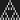

|
Niv's Stuff 🦌 |
|
𝔽inished 𝔾ames
| purrgatory - itch.io - Steam | jul 2021 | a slice-of-death visual novel about making friends, cracking cat puns, and waiting for eternity to pass. |
𝔻rabbles and 𝔻emos
| Stay Warm With Me | dec 2022 | why don't you stay / where the sun is warm / and sand soaks up your tears? (made for UNC Winter Break Jam) | |
|  | Automaton Diver | mar 2022 | explore 1d cellular automata in a minimalist platformer! |
| The Immortal Zugzwang | aug 2021 | relive Nimzowitsch's legendary chess game! | |
| Super Duper Genre Pooper 2021 | jun 2021 | play some cross-genre microgames! you know you wanna! (made for GMTK Jam 2021) | |
| The Immortal Game | feb 2021 | a very short educational VN about chess | |
| The End of Days | jun 2020 | a mouse maze adventure about friendship and Salvation (made by me, Mikey, and Rey for I Can't Draw Again) | |
| Shelving Simulator | jan 2020 | shelve some books, dummy! (demo; Windows only) | |
| Type the Bible | jan 2020 | prove your piety by typing the entire Bible... without mistakes | |
| SPACEDEER | dec 2019 | collect stars in outer space! (made for Weekly Game Jam 219) | |
| My Cryptid Crush | oct 2019 | a cryptid dating sim (demo; made by Team Fishtrap for Cryptid Jam) | |
| purrgatory (demo) | apr 2019 | a demo of purrgatory made in 11 days! (made for I Can't Draw by the purrgatory team) | |
| Loan Runner | mar 2019 | a student loans-themed endless runner (made by Team Jamchester for Manchester Student Game Jam 2019) | |
| Emergent Beehavior | feb 2019 | a difficult puzzle game about turing machines and bees | |
| Scriptorium | dec 2018 | a narrative-based medieval typing experience (demo) | |
| Purrgatory (prototype) | dec 2018 | the original purrgatory! (demo) | |
| CYBEROMANCE | nov 2018 | a software dating sim (demo; Windows only; made by me and zach for The Rift VN Jam) | |
| Llama Hog Aptitude Test | 2010 | a zany choose-your-own-adventure i made when i was 12! |


© me 2019–2023